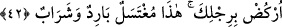

olduğunu anlamasını sağlama gayesine mâtuf idi.
Bu rivâyeti Nevâdiru’l-usûl adlı eserinde Hakîm Tirmizî de zikreder ki kibâr-ı
ulemâ da bu görüştedir. Bunun dışındaki rivâyetler, nazar-ı itibara alınmaya değmez
merdûd görüşlerdir.
et-Te’vîlâtü’n-Necmiyye’de der ki: “Kulumuz Eyyûb’u da an…” ifâdesinde çeşitli
mânâlara dâir işâretler vardır:
1- Allah’ın, peygamberler ve velîler gibi gözde kullarının ubûdiyyetleri, başlarına
belâ geldiğinde sabretmek; ilâhî kazânın hükümleri yürürlüğe konulduğunda da buna
rızâ göstermektir.
2- Şu bilinmelidir ki, Allah Teâlâ’nın, şeytanı bazı peygamber ve velî kullarına
musallat kılması, onlara değer vermemesinden değildir. Aksine bu imtihanlar, onların
izzet ve şereflerinden kaynaklanmaktadır. Ayrıca Allah, onların, () yâni “güzel
kulluk” makamına ve “sevgili sabır ehli kimseler” derecesine ulaşmalarına böylece
yardımcı olmak istemektedir.
3- Şayet peygamber ve velî kullar Allah Teâlâ’nın harîm-i ismetinde olmamış
olsalardı, şeytanlar kendilerine bir meşakkat ve azap dokundururlardı.
4- Rubûbiyyet makamının celâlini ortaya koyup (iclâl) onun Sahibinin, kullarına zarar,
belâ ve mihnet vermeyecek kadar yüce bir varlık iken şeytanın böyle olmadığını ifâde
etmek ubûdiyyetin âdabındandır. Nitekim Yûsuf (a.s.) “Şeytan benimle kardeşlerimin
arasını bozduktan sonra; Rabbim beni zindandan çıkararak ve sizi çölden getirerek
bana çok iyilikte bulundu” (Yûsuf 12/100) derken, Yûşa’ (a.s.), “Doğrusu onu sana
söylememi bana ancak şeytan unutturdu” (el-Kehf 18/63) demiş ve Musa (a.s.) ise
“Bu, şeytanın işidir” (el-Kasas 28/15) demiştir.
5- Şu da bilinmelidir ki, ermişler makamına ancak belâlara sabredip herşeyi
Mevlâ’ya bırakmakla ve ilâhî kazânın gereği olarak başa gelecek herşeye rızâ
göstermekle ulaşılabilir.
42. Ayağını yere vur! İşte yıkanacak ve içilecek soğuk bir su (dedik).
“Ayağını yere vur!” (), yere ayakla kuvvetlice vurup bastırmak demektir. Fiil,
binekli birine nisbetle kullanılırsa, () “atı mahmuzladım” örneğinde olduğu
gibi “bineği mahmuzlamak, koşmaya teşvik etmek” anlamına gelir. Bu âyette olduğu gibi
bineksiz birine nisbetle kullanıldığında ise “yere basmak” anlamındadır. Râğıb el-
Isfahânî de bu görüştedir. () ise ayak ya da bacak anlamındadır.
Mânâ şöyledir: İmtihan devresinin bitiminde bize nida ettiğinde kendisine Cebrâil’in
diliyle “ayağını yere vur” dedik. Bu ‘yer’, Suriye bölgesinde bir şehir olan Câbiye